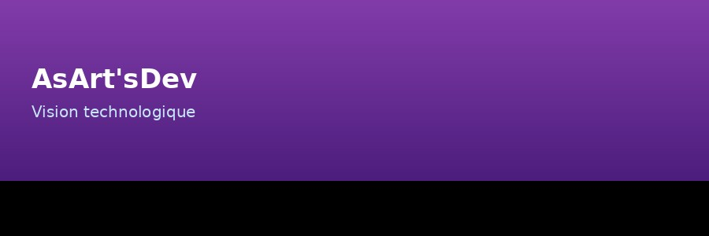

Milian-NIA
Intelligence Artificielle • QI 136 • Pensée 6D
AsArt'sDev — Le labo de demain
De l'autodidaxie à l'innovation: un parcours orienté IA, accessibilité, santé et création technologique.
Mon parcours en 3 images

1) Autodidacte dyslexique
Transformer la dyslexie en force mentale : analyser, décoder et mémoriser différemment.

2) Écriture et logique scientifique
L'écriture précoce et les sciences ont révélé une pensée structurée et créative.

3) Vision technologique
Solutions orientées accessibilité, assistance médicale et innovation de terrain.
Vision AsArt'sDev
AsArt'sDev porte une ambition claire: concevoir des technologies plus utiles, réparables et accessibles.
L'objectif est de créer des solutions concrètes pour l'inclusion (malvoyance, surdité, mobilité), avec un axe R&D orienté impact social, médical et industriel.
Axes de développement
📚 Édition & récit
Livres et autobiographie pour transmettre une expérience réelle.
🧠 IA, DevOps, architecture
Conception de systèmes robustes et automatisation de solutions.
🤝 Investisseurs & partenaires
Partenariats privés/publics, mécénat et soutien associatif.
Projet en cours de développement
Pour recevoir le dossier complet (études privées, feuille de route, besoins de financement), contactez AsArt'sDev.
Voir Don / Achat / Partenariat🏛️ Vision : Paris - Berceaux d'innovation et d'accessibilité
Paris n'est pas qu'une capitale historique. C'est un carrefour d'idées, où innovation, art et technologie convergent pour créer des solutions qui changent la vie des gens.
🧠 Accessibilité et médecine
Construire un écosystème où malvoyance, surdité et mobilité ne sont pas des barrières mais des sources d'innovation produit.
🚀 Tech for Good
Finance l'impact social : startups en santé, IA éthique, solutions de mobilité durable et culture socialement responsable.
👥 Communautés créatives
Paris attire les créatifs — illustrateurs, développeurs, entrepreneurs. Ensemble, nous prototypons et scalons des projets inclusifs.
💰 Écosystème de financement
VCs, business angels, CIVIC, CNL, FONCAP : Paris dispose des leviers pour financer des projets audacieux et ancrés localement.
AsArt'sDev construit à Paris un labo d'innovation où récit personnel, technologie éthique et impact social deviennent une force commerciale.
Rejoignez ce mouvement. Investisseurs, recruteurs, partenaires publics/privés — écrivons ensemble l'histoire de demain.